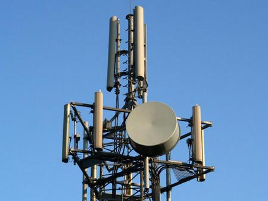
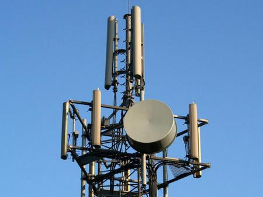

Высокоскоростной Интернет в п.Реттиховка
Подключение производится в частном порядке, к действующей VPN сети, на скорости пока 5 мбит, на договорной основе
Как только людей станет больше, например для оплаты 20 мбит скорости(30000руб.), тариф сети будет увеличен...
Связь между домами осуществляется Посредствам Радиомодулей NanoStation M5, на частоте 5150 ГГц.
В прямой видимости Ретранслятора, на крыше дома Центральная 19
Дом подключен По Оптике на тариф 5 мбит-безлимит
Плата за порт подключения к моей сети составляет 1000 руб. в месяц
Обязательным условием для связи является Отсутствие на пути следования сигналов
Препятствий, в виде Деревьев и зданий, что гарантирует постоянную, хорошую связь
Другими словами с вашей крыши дома или квартиры, где установлен ваш передатчик
Крыша дома Центральная 19 должна быть видна по прямой
Так как NanoStation M5 работают только прямо
Устройства NanoStation M5, частотой 5150ГГц, 8 жильный сетевой кабель марки UTP
Приобретается самостоятельно в любом DNS магазине или у нас за свой счет
Работа по установке устройства расчитывается индивидуально, и зависит от сложности выполненых работ
Учитывая прокладку кабеля от станции до Конечной точки, модема или компа
Получив канал за 1500, его можно так же с кем то делить
Передать соседям на весь подьезд, в другой дом, на все Село...
Скорость будет делится и значительно падать с каждым подключенным к сети
Особенно по вечерам, когда каждый будет что то качать или смотреть
Большое колличество безплатно подключенных просто загрузят 5 мбитный канал
Поэтому бесплатно делать это не рекомендовано. Да и не нужно
Так же наоборот, при достаточном сборе средств с подключенных, Мы Подымем тариф сети до 50-100 мбит
Хочешь Оптику в Дом? Тяни народ в сеть, подключайся...
zabava791236@gmail.com
Чат

 

...